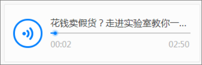
原生
5--------视频
【调整】未播放时，显示视频中第一帧截图和播放按钮。播放完成，恢复原样（后期支持修改视频封面图）
单击，播放当前视频，播放失败，提示”播放失败“
A-相关新闻，默认显示5个以内相关新闻，最多显示10个，每条包括标题+发布时间+来源，左文右图（无图显示纯文字），单击进入详情页面
B-根据标签自动出相关新闻，编辑可人工选择
12--------相关新闻
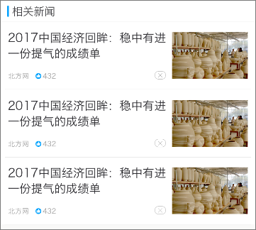
3--------来源区
非可订阅的，显示如下
可订阅的，显示如下
A-未登录，进入登录流程；已登录直接关注
B-关注失败，提示”关注失败“；成功，提示”关注成功“，隐藏关注按钮
--------关注
4--------图片
A-若是小图片，按照原尺寸显示
B-若图片过宽（过长），最大宽度为屏幕宽度，以宽度为标准，进行等比缩放
C-gif图，滑动到当前位置再加载图片
单击进入图片预览页面

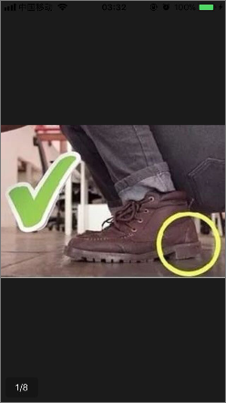
[调整]6--------音频
7--------附件
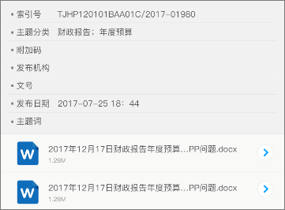
A-附件分2种形式，1种是带索引的，另外一种是纯附件的
B-附件列表按照添加顺序排列
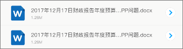
四种基本格式（word、pdf、jpg、excel）的附件支持客户端内打开，点击附件跳转新的页面浏览。如附件不属于四种基本格式，点击后跳转页面并显示默认提示页。
C-索引表格固定为八项，支持折行。允许某一项对应的内容为空，如文字过长则折行显示。不同格式的附件对应不同的icon，除word、pdf、jpg、excel使用各自对应的icon外，其他格式统一使用一个icon
附件的扩展名范围为：
doc、docx、xls、xlsx、ppt、ppts、zip、rar、txt、pdf、jpg、jpeg、gif、png。
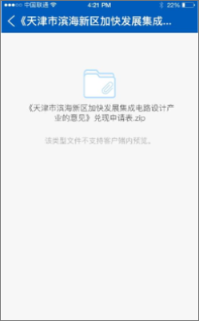
8--------责任编辑
显示 责任编辑+XXX
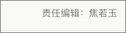
9--------相关标签
A-显示后台打的标签，不可点击
B-标签长度随内容变化，每行最多支持5个，超出折行显示
11--------点赞
用户可点赞，也可取消点赞
虚拟点赞数规则：客户端显示的点赞数=实际点赞数+稿件签发时长（转换成分钟数，超过90小时，按照90小时计算）*0.1+3000的随机数，如有小数点则显示四舍五入后的数字。例如：某条新闻从发布到当前时长为1小时53分钟（113分钟），实点赞数为100，那么客户端的显示点赞数=100+113*0.1+2500=2611
数字显示规则：千以内（4位数字）时显示完全，到达万时，显示小数点，小数点后保留1位有效数字，四舍五入
20.0W的情况保留
如点赞失败，提示“点赞失败”，按钮样式不变化；点赞成功，按钮改变样式
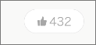
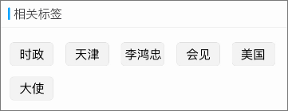
[新增]10--------频道关注
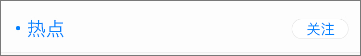
A-若频道已经添加到我的频道中，按钮隐藏，显示文字已关注
B-若频道未添加到我的频道中，显示此项，单击关注，将频道添加到我的频道末尾；
C-关注失败，提示“关注失败”；关注成功，提示“关注成功”按钮隐藏，显示文字已关注
播放，单击播放音频
暂停，单击暂停播放
单击，播放当前音频，显示暂停按钮，播放失败，提示”播放失败“
播放起始时间
进度条
独到评论，没你不行
[调整]若播放器有全屏按钮，单击按钮可进行全屏播放，播放样式不同系统不同展现形式
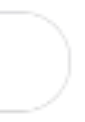
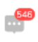
2323